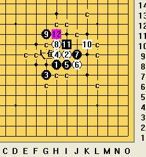
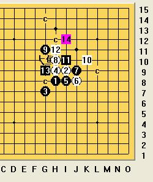

请教斜月败10的一个问题
#1 请教斜月败10的一个问题 作者：雨还在下 发表时间：2009-5-27 11:38:27
=======上图对应的爱五子棋谱代码如下，以便你拆解：========
h8i9g7h9i8j8j9h10g11k10i10
======================================================
传说这个白10必胜,对于这个11,白12应该怎么下呢?
请各路大师指点，谢谢啦。
#2 Re:请教斜月败10的一个问题 作者：忧郁的双眼 发表时间：2009-5-27 11:56:02
请看大鱼专版：无敌天下
里面有最强的几路必胜
#3 Re:请教斜月败10的一个问题 作者：雨还在下 发表时间：2009-5-27 11:59:36
没找到，请楼上老师给个链接，谢谢啦。#4 Re:请教斜月败10的一个问题 作者：忧郁的双眼 发表时间：2009-5-27 12:05:21
题目：生日了，送大家几个图就当欣赏吧！#5 Re:请教斜月败10的一个问题 作者：茗弈小刀 发表时间：2009-5-27 12:05:30
我只能说据我所知杀不了的。
#6 Re:请教斜月败10的一个问题 作者：茗弈小刀 发表时间：2009-5-27 12:37:12
ShowPost.asp?ThreadID=6470我想大鱼师傅说的是这个13和15能杀，那么别的13和15呢？

#7 Re:请教斜月败10的一个问题 作者：刀魂 发表时间：2009-5-27 12:48:46
有一个人能杀，空恨#8 Re:请教斜月败10的一个问题 作者：没事摆石子玩 发表时间：2009-5-27 12:54:16
刀魂你说空恨能杀，那意思你也会是吧？少拿别人来抬高自己！空恨我不认识！
#9 Re:请教斜月败10的一个问题 作者：醉了 发表时间：2009-5-27 16:48:38
怎么杀呢？#10 Re:请教斜月败10的一个问题 作者：茗弈小刀 发表时间：2009-5-27 18:27:46
比如大鱼师傅这个图
=======上图对应的爱五子棋谱代码如下，以便你拆解：========
h8i9g7h9i8j8j9h10g11k10i10h11g9i12g10g8h13i7k9j5k7i5
======================================================
23在18，22之间怎么杀？大家要记得大鱼老师是实战棋手，他很多棋是理论杀，因为我们没有他那么强大的计算力，而我们只能一步一步做起。
#11 Re:请教斜月败10的一个问题 作者：自来水 发表时间：2009-5-29 18:33:22
这个白12以下,除了大鱼那个点其它都可以杀,不过大鱼那个点的变化我完全看不出必胜……
#12 Re:请教斜月败10的一个问题 作者：茗弈小刀 发表时间：2009-5-29 18:51:29
21有很多选则，我还在拆。